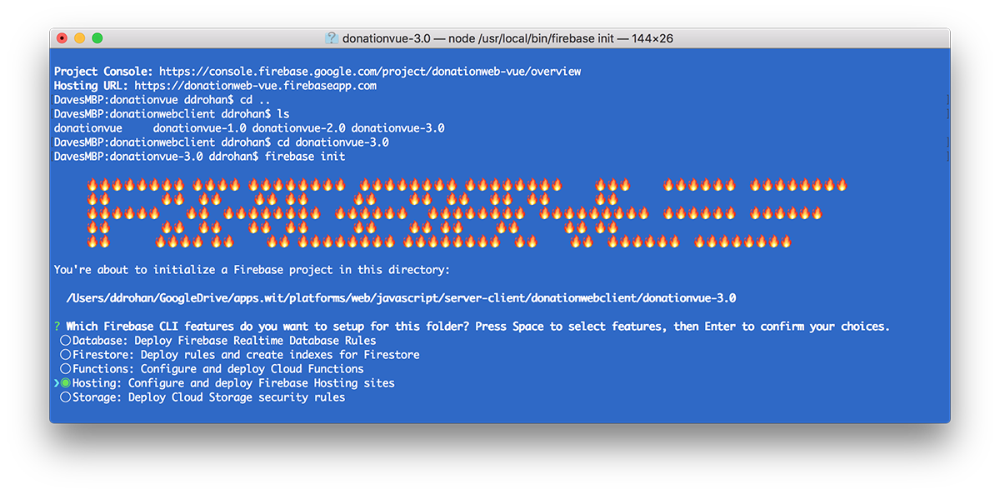
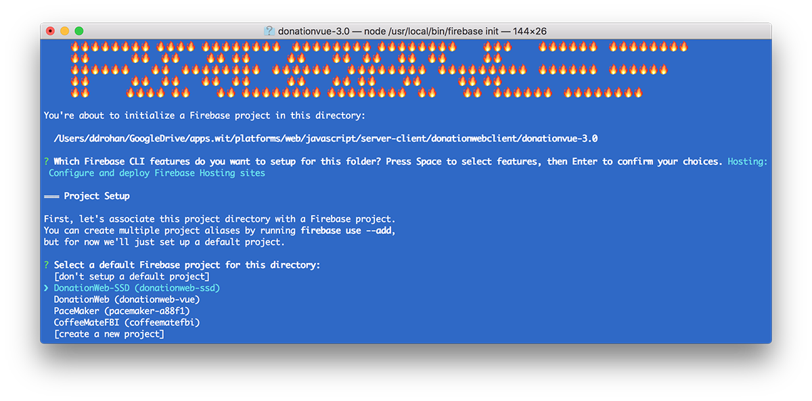
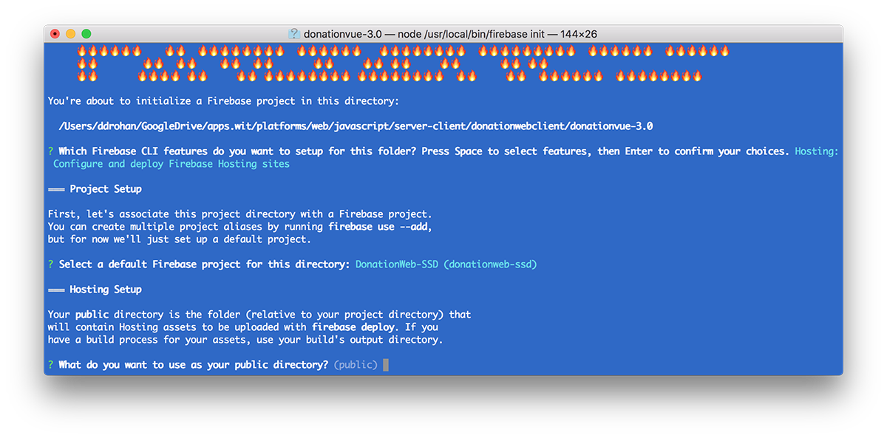
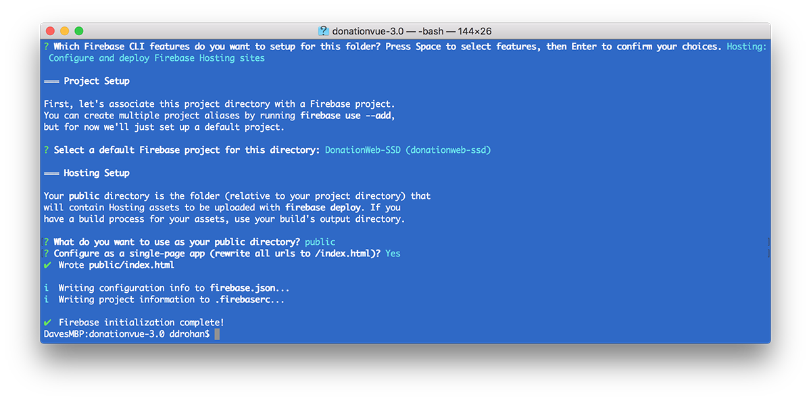
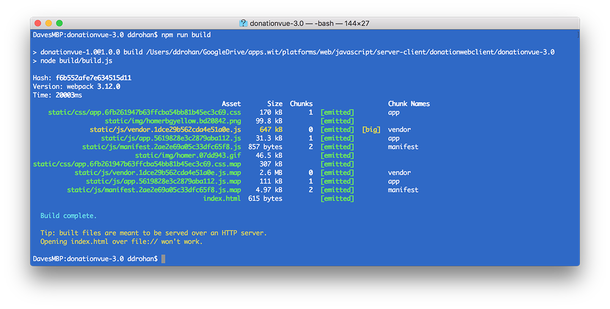
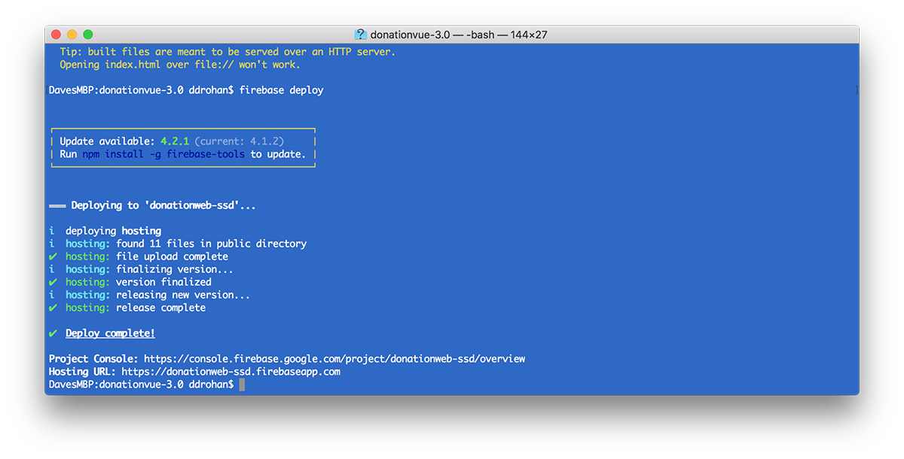

As a related exercise (and a useful one!) you should complete this lab in the context of your own Web App, and deploy your app to Firebase.
For reference, I mainly used this link when deploying to Firebase.
What follows are a series of screenshots which cover my own deployment of Version 3.0 of our Vue Web App.
You must initially have a firebase account and login with
firebase loginand then initialise firebase in your project folder with
firebase initYou then just basically follow the instructions :)




Once the firebase initialisation is complete you then
npm run buildto 'build' a deployment version of your Vue App

and then
firebase deployto actually deploy your web app.
